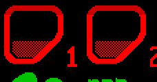

Indicators of the home screen
Every indicator of the home screen with all its states — what you see, what it means, what to do.
Where each indicator sits is shown in The home screen. This page says what each one means, state by state.
How to read any indicator


Almost every indicator follows the same rule. Learn it once and you can read an indicator you have never seen.
| What you see | What it means |
|---|---|
| Normal. The device answers and its value is inside the limits. | |
| Alarm. The device answers, but the value has left the limits. An alarm window follows after the alarm delay. | |
| No answer from the device. The value is shown as XXXX. | |
| The device is in the profile, but its control is switched off. The value is shown as !!!!. | |
| Icon alternating with a red ? | A device of the wrong kind answers in its place. The value is shown as ????. |
| Not a fault. A state you have chosen or that needs your attention: implement raised, markers up, ignition off, application locked by hand. |
Speed
The travel speed in km/h. Messages about the speed replace the figure and blink about once a second, so that the figure stays readable.
| What you see | What it means |
|---|---|
| A number in white, e.g. 10.0 | Normal. |
| “SLOWER” on red | You drive faster than the maximum set for the speed sensor. Slow down. |
| “FASTER” on red | You drive slower than the minimum. Speed up. |
| XX.X in red | No answer from the input device that carries the speed sensor. |
| ???? in red | A device of the wrong kind answers in place of the speed sensor. |
| A yellow number alternating with “IMITATION” | The speed is simulated from the setting of the speed sensor, not measured. Nothing that depends on the speed is real. See Work without the speed sensor. |
| INCREASE IMITATION / DECREASE IMITATION | The simulated speed itself is outside the permitted range. Change the setting, not the travel speed. |
| Sensor1 / Sensor2 | One of two speed sensors has failed. |
| “Settings” | The minimum and the maximum speed contradict each other. |
“SLOWER” and “FASTER” are not alarm windows. They stay in the speed field for as long as the speed is wrong, because you have to see them while correcting it. See Speed sensor alarms.
Clock
The clock slot at the top right is shared by several messages.
| What you see | What it means |
|---|---|
| The time in white | Normal. |
| BAT in red, for about a second in every four | The clock battery is low. The clock still runs; between the flashes the time is shown in red. Have the battery replaced. |
| XX:XX in red, blinking | The clock chip does not answer. The panel has no date and time; everything it records carries the wrong one. |
| IMITAT in yellow | The imitation mode of the service menu is on. |
| Blue hours:minutes, then TRIAL, then blank | A trial period is running; the blue figure is the time left. When the first row has no room for the clock, this loop appears only now and then. |
Memory card

Shows that a microSD card is in the slot. Two states only: the icon is there, or it is not.
Hopper



A full green hopper is normal. An empty red one means the level has fallen below the sensor: refill. See Hopper alarms.
Metering unit


The rotation of the dispenser shaft. While the shaft turns, the icon turns — the fastest way to see that the metering unit really runs. Red means no rotation, or not the speed required. See Rotation alarms.
Fan

The fan speed in revolutions per minute. Green is normal; red — above the maximum or below the minimum. The × and the [!] have the usual meaning.
Pressure

The vacuum or the positive air pressure in the distribution system, in kPa. Green is normal; red — above or below the permitted range. See Pressure alarms.
Engine sensors


The sensors of the engine that drives the fan.
| Indicator | Green | Red or yellow |
|---|---|---|
| Oil pressure | Normal | Red: the oil pressure has fallen below the permitted level. |
| Battery charge | Normal | Red: the battery is not being charged. |
| Ignition | Green key: ignition on, the engine sensors are watched | Yellow key: ignition off. Not a fault — but the engine is not watched either. |
| Fuel level | Normal | Red: little fuel left in the tank. |
| Air filter | Normal | Red: the air filter is clogged; clean or replace it. |
Area

The area treated on the active field, in hectares.
Population

In the “Precise” mode: the actual seeding rate in thousands of seeds per hectare (ths/ha).
Product rate by weight


Shown when the dispensers apply products by weight; one indicator per product, with its number. It shows the rate in kg per hectare.
| What you see | What it means |
|---|---|
| Icon green | Normal. The machine applies what was asked of it. |
| Icon red, blinking | The actual rate is outside the permitted deviation from the target. |
| Field lit, figure blinking | The target is being set. Touch and hold the field to type the target on the number pad, or use “PLUS” / “MINUS”. |
| Field lit, not blinking | Setting is on, but another rate field is the one being changed. This one shows its target and waits. |
Dosing by weight is not possible
A red blinking product icon at the right edge. The panel has worked out that the target cannot be held at any travel speed: the lowest speed at which the metering rollers can deliver the rate is already at or above the highest.
What to do. Check the target rates first — one product asking too much closes the window for all of them. Then check the metering rollers: a roller of another size may be needed. The speed limits the panel calculated are on the “Information” screen of the speed sensor. See Dosing by weight alarms.
Markers

| What you see | What it means |
|---|---|
| Green, both arms down | Both markers are lowered. |
| Green, one arm down | Only that marker is lowered — left or right, as drawn. |
| Yellow, both arms up | Both markers are raised. Not a fault; on a machine that changes the tramline bout by the markers, the bout changes now. |
Implement position


Green — lowered, in work. Yellow — raised, in transport, not applying.
Tramline bout

Shown only if the tramline is switched on. The large number is the current bout, the small one under it the number of bouts in the rhythm.
| What you see | What it means |
|---|---|
| Bout figures, e.g. 1 over 3 | How far you are from the next tramline. |
| Tramline icon grey | The bout changes by itself. |
| Tramline icon yellow | The bout does not change by itself: automatic change is switched off, or the sensor it depends on is missing, silent or not under control. Change it by hand. |
See Move to the next tramline bout.
Manual lock

A yellow hand, blinking, at the right edge: product application is locked by hand. The machine applies nothing, however it moves. Not shown at all while application is allowed. It appears on machines with electric dispenser motors or a liquid fertilizer pump. See Lock application by hand.
Actuator failure


One icon for all electric motors and tramline actuators together. Not shown at all while everything is in order.
| What you see | What it means |
|---|---|
| Red, blinking | At least one motor or actuator is in an alarm state. |
| Alternating with white [!] | The control of at least one actuator is switched off. No fault is known — but that actuator is not watched. |
Which one and why is on the Motors screen.
Liquid fertilizer pump
Depending on the equipment, the pump has two or three indicators.
| Indicator | What it shows |
|---|---|
| The main indicator. Its context menu holds the pump parameters. | |
| How hard the pump works. It disappears first when the screen has no room for it. | |
| Pressure, bar | Only if the pressure sensor is fitted and switched on in the pump controller settings. |
Rate. Besides green, red, × and [!]: a yellow pump with STOP — application is locked by hand or the implement is raised, and the pump will not start when the machine moves; a lit target figure — there are no section flow sensors in the profile, so the figure is the target, not a measurement.
Load. At 99 % and above it turns yellow: the pump is at its limit and cannot follow more speed. Drive slower, or the rate falls below the target. ---- blinking red: the controller reports no load figure.
Pressure. Red means the liquid pressure is too high — reduce the speed, or raise “Max pressure, Bar” in the pump controller settings if the line can really take it. ---- blinking red: the pressure sensor is broken or gives no reading. See Pump controller alarms.
Something your machine does that this page does not answer? Write to support@agriwelt.com — an engineer answers.